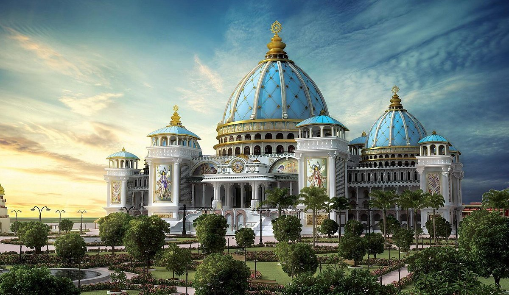

ISKCON Ajmer, an extension of ISKCON Jaipur, is a hub of the Hare Krishna movement, established by His Divine Grace A.C Bhaktivedanta Swami Srila Prabhupad in 1966 in New York City. Dedicated to propagating spiritual wisdom from the Vedas, particularly the Bhagavad-gītā and the Bhagavat Purana, it emphasizes congregational chanting of Krishna's holy names, following the tradition of Sri Krishna Chaitanya Mahaprabhu. Open year-round, ISKCON Ajmer welcomes all seeking the blessings of Sri Sri Radha Madhava through various devotional services offered by devotees.

ISKCON
The International Society for Krishna Consciousness (ISKCON), known as the Hare Krishna movement, boasts five hundred major centers, temples, and rural communities, alongside nearly one hundred affiliated vegetarian restaurants, thousands of local meeting groups called namahattas, and numerous community projects, with millions of congregational members globally. Founded in 1966 in New York City by His Divine Grace A. C. Bhaktivedanta Swami Prabhupāda, ISKCON follows the Gaudiya-Vaishnava tradition, centered on the Bhagavad-gītā and the Bhagavat Purana. ISKCON emphasizes devotion to Lord Krishna, employing the maha-mantra, Hare Krishna, for spiritual upliftment. Renowned academics like Diana Eck of Harvard University commend ISKCON's cultural significance, while Dr. A. L. Basham recognized its rapid Western expansion. Srila Prabhupada's presentation of Vaishnava culture has garnered admiration worldwide. ISKCON members engage in home worship, temple rituals, and various outreach activities including festivals, arts, yoga seminars, and charitable initiatives like hospitals and schools, embodying the essence of devotional yoga.
Founder Acharya
Born in Calcutta, India, in 1896, His Divine Grace A.C. Bhaktivedanta Swami Prabhupada met his spiritual guide, Srila Bhaktisiddhanta Sarasvati Gosvami, in 1922, who persuaded him to devote his life to teaching Vedic knowledge. Prabhupada became Sarasvati's disciple in 1933 and started Back to Godhead magazine in 1944. He retired in 1950 to focus on study and writing in Vrndavana, later receiving sannyasa in 1959. In 1965, he traveled to the United States and founded ISKCON in 1966. Despite initial struggles, ISKCON grew globally under his guidance. Prabhupada introduced Vedic education in the West, built cultural centers in India, notably in Mayapur and Vrndavana, and authored over fifty volumes of Vedic literature. His extensive travels and teachings promoted the glory of Vrindavan-dham worldwide. Prabhupada's books, translated into over fifty languages, remain influential in the study of Indian religion and philosophy. He passed away in 1977, leaving a profound legacy.
Activites
ISKCON Youth Forum (IYF) is the youth wing of ISKCON Ajmer, aimed towards nourishing the hearts of today’s youth with the sublime message of the scriptures, helping them flourish in their lives in a wholesome manner. This is achieved by a number of initiatives like campus outreach, youth festivals, retreats and personal care and guidance by a team of experienced youth mentors.
The transcendental vibration of
harinam-sankirtan is imported
from the spiritual world
Lord Caitanya emphasized the transformative power of harinam-sankirtan, congregational chanting of the Holy Name. ISKCON Ajmer conducts regular outdoor chanting sessions, inviting all to join. Accompanied by traditional Indian instruments, the melodious chanting attracts participants and offers spiritual solace. The temple also distributes Vedic wisdom through these sessions, echoing the teachings of past spiritual luminaries.
Books are the basis of the Krishna Conscious and religion without philosophy is a sentiment. So the distribution of Transcendental literature presented by His Divine Grace A.C Bhaktivedanta Swami Srila Prabhupada is very essential to save this world from its darkest hour. Devotees go on book distribution regularly in the town and the surrounding villages. Books stalls are placed at various public festivals also.
ISKCON propagates Krishna consciousness through daily lectures and discussions on Bhagavad Gita and Srimad-Bhagavatam. These timeless scriptures offer wisdom for peace and love. Special seminars cater to youth and congregation members. The glorification of these texts emphasizes their purifying effect and clarifying nature, encouraging continuous study and reflection.
Hare Krishna Hare Krishna
Krishna Hare Krishna Hare
Hare Ram Hare Ram
Ram Hare Hare Hare
ISKCON Ajmer hosts a variety of activities to promote Krishna consciousness. Daily lectures and discussions focus on the teachings of Bhagavad Gita and Srimad-Bhagavatam, offering timeless wisdom for peace and love. Special seminars cater to youth and congregation members, providing deeper insights into spiritual practices. Additionally, regular harinam-sankirtan sessions engage devotees and the public in congregational chanting for spiritual upliftment. These activities are just a glimpse; ISKCON Ajmer offers many more opportunities for spiritual growth and community involvement
- We Believe And Practice ABCD -
Association
We associate with devotees, where the subjects of discussion are topics related to Krishna, His transcendental pastimes & facets in Krishna Consciousness.
Books
We read books of Srila Prabhupada only (Bhagavad Gita and Bhagavatam). By reading, our intelligence become purified.
Chanting
We chant daily which cleanses the mirror of our heart. Chanting removes the anarthas and revive our forgotten love for Krishna gradually.
Diet
Food without tinge of flesh, onion, garlic and that which is sattvik and offered to Krishna as bhoga and then having it as prasadam – the remnants of food offered to the Lord.
Blogs
Janmashtami 2024
Sri Krishna Janmashtami is a sacred occasion that marks the divine appearance of the Supreme...
Jagannath Rath Yatra 2024
At the height of Indian summer, right at the beginning of the Monsoon, the Lord of Puri goes to his garden palace ..
Daily Temple Schedule
4:30AM Mangala Arati - 7:30AM Darshan and Guru-Puja - 8:00AM Class - 7:00PM Sandhya Arati..
Make way for Lord Jagannath - Rath Yatra ISKCON Ajmer
Every year at ISKCON Ajmer, a special Rath Yatra Festival is organized. Lord Jagannatha, Lady Subhadra and Lord Baladeva are so ...
Sri Narasimha Chaturdashi
kandiya nrsimha-pade magibo kakhana
nirapade navadvipe jugala-bhajana
bhaya bhaya paya ya
prasanna hoibo kabe more daya kari...
The First Rath Yatra of ISKCON
Srila Prabhupada, the founder of the Hare Krishna movement, was very fond of Ratha-yatra. As a child he began celebrating Ratha-yatra when...
Donation
According to the Vedic scriptures and the teachings of Srila Prabhupada, donating for the temple holds great significance in the practice of devotional service. By contributing to the maintenance and development of the temple, devotees participate in the service of the Lord and His devotees, which is highly meritorious.
Donating for the temple helps in various ways:
Service to the Lord: When we donate for the temple, we directly participate in the worship and service of the Lord. Our contributions help in the upkeep of the temple, deity worship, festivals, and other spiritual activities, allowing us to serve the Lord in a tangible way.
Spiritual Growth: Supporting the temple financially fosters our spiritual growth. It helps create an environment conducive to devotional practices, where we can regularly associate with devotees, engage in kirtan, hear spiritual discourses, and deepen our understanding of Vedic teachings.
Community Development: Temples serve as spiritual hubs that bring devotees together. By donating, we contribute to the growth and development of the devotee community. This helps in creating a supportive and nurturing environment where devotees can inspire and assist one another in their spiritual journeys.
Outreach and Preaching: Temples play a vital role in spreading the message of Lord Krishna and the Vedic culture. Donations enable the temple to organize outreach programs, distribute spiritual literature, conduct seminars, and host festivals, reaching out to a wider audience and positively impacting their lives.
Mercy and Blessings: By donating for the temple, we receive the mercy and blessings of the Lord and His devotees. The scriptures emphasize that acts of selfless service and giving attract divine grace, leading to spiritual advancement and purification of the heart.
It is important to note that donating for the temple should be done with the right intention and understanding, without any materialistic desires or expectations. It should be an expression of love and devotion towards the Lord and a desire to support the spiritual community.
Temple Hours
Come and get the mercy of Sri Sri Radha Madhav
4:30AM - Mangal Arati
5:00AM - 7:30AM - Harinam Japa
7:30AM - 7:50AM - Darshan Arati & Guru Puja
7:50AM -8:45AM - Srimad Bhagavatam Class
7:00PM - Gaura Arati
7:30PM -8:15PM - Srimad Bhgavad Gita Class
CJRM+HGF, Asha Ganj Rd, near Sant Kavaram school, Gujar Mohalla, Ajmer, Rajasthan 305001
Visiting the ISKCON temple in Ajmer offers a serene opportunity to connect with spirituality. Devotees and visitors can experience the divine presence by taking darshan of Sri Sri Radha Madhav, the temple's presiding deities. Witnessing the beauty and grace of Radha Madhav inspires devotion and inner peace. The temple atmosphere, filled with bhajans, prayers, and the aroma of incense, creates a sacred ambiance for spiritual contemplation and reflection. Each darshan deepens the bond between the devotee and the divine, fostering a sense of divine love and grace.
Contact Us
Hare Krishna!
Thank you for visiting our website. We invite you to experience the spiritual ambiance of our temple in person. For inquiries or assistance, please don't hesitate to contact us.